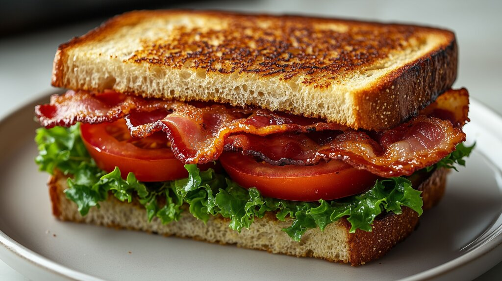

Home
How to Make a BLT!

Description of Recipe
I am going to teach you how to make a great tasting BLT. The only equipment you need to make one
is a knife, a cutting board, and a cooking pan. Make sure not to microwave your bacon or it will ruin the sandwich.
Ingredients
- Bread
- Butter
- Bacon
- Lettuce
- Tomatoes
- Mayo
Cooking Steps
- Spread butter on the bread and toast it on the pan
- Once the bread is sufficiently toasted, cook the bacon.
- Chop the lettuce and tomatoes.
- Form the sandwich.
- Add as much or as little mayo as you would like. Enjoy!